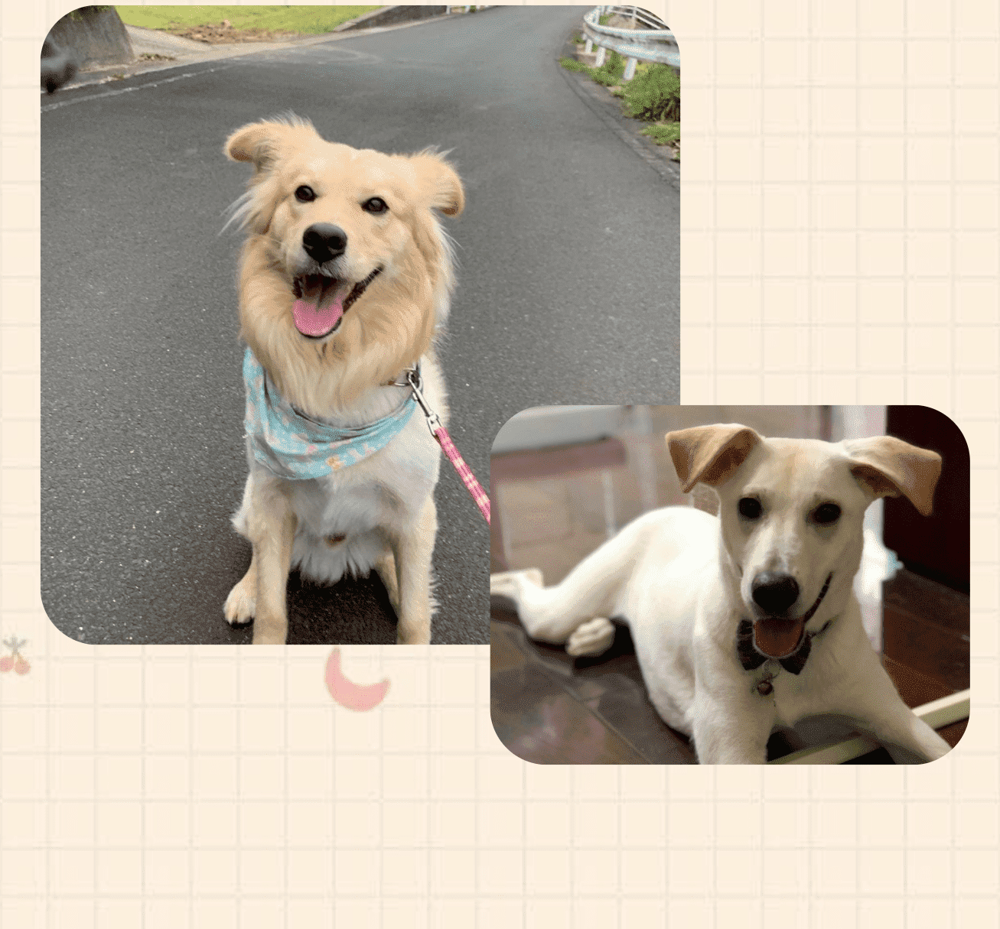

米克斯
（MIX）
指的是狗由不同品種雜交而成，血統未經育犬協會登記
混種狗的體型一般介乎其父母的身材之間，毛色、毛長各有差異，但狗隻經過多代混種後，其毛色一般會偏向黑色、深咖啡或淺咖啡色，胸毛多數是白色
一般來說，要預測混種狗長大後的體型是相當困難，但較為肯定是，兩款迷你狗的混種後代，體型不會變大。當兩種狗交配時，有些品種亦會較常將其特徵遺傳給混種後代。

不會有遺傳疾病
米克斯是屬於自然繁殖，不能說絕對沒有遺傳疾病，但相較於品種犬來說，遺傳疾病問題絕對會少很多。
獨一無二
因為混合了不同的犬種，所以每一隻米克斯不管是尾巴、身上的斑點、耳朵形狀等等都是不相同的， 你幾乎不可能找到跟家裡米克斯長得一模一樣的狗狗!
聰明又顧家
尤其是在外面流浪過的米克斯們，通常都比較聰明，畢竟要在險惡的環境下找尋食物、躲避追捕，如果有人願意給牠們一個溫暖的家，只要給予愛以及花點時間訓練，米克斯們絕對會是最忠誠的夥伴。
壽命長
整體來說一般米克斯的壽命可以達到15~20年。這麼長的時間，不管是從小孩長大成青年，或是壯年邁入老年，你都會有一個最好的朋友陪著你。


體型難掌握
因為你不知道米克斯混了哪些犬種，所以很難掌握之後長大的體型會是如何。有些人米克斯幼犬，剛開始看起來嬌小又可愛，但長大後體型卻比想像中要大得很多。
無法預測性格
每一種犬類都有獨特的性格，如德牧的服從性極高、挪威納好鬥、薩摩耶則天生淘氣。無法得知米克斯究竟混了多少品種，因此也無法得知其性格。
基因變異的疾病
雖然米克斯的抗病能力強，較小的機率會患上遺傳病，也比較長壽。但是，混血會造成基因突變，進而產生另類的疾病。

米克斯身上的基因多樣，跟純種犬比起來，罹患先天性心臟病、先天性耳聾、眼部疾病、關節骨骼發育不全、神經系統疾病的機率都比較小。
而且，對於細菌、病毒所引起的種種疾病的抵抗能力也比純種狗狗來得好。
不過，也由於身上有多種狗狗的基因，較難預測因基因突變而發生的基因變異疾病，但是這樣的另類疾病發生率也比較低。